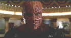

Newine/1997/94m/ANA 2.35
Spawn, a real
comic book of a movie, is certainly not general audience entertainment. Set in a fantastic
world where good and evil are battling for the fate of mankind, Spawn is the ultimate
anti-hero, deformed and conflicted, in service of evil unwittingly.
John Leguizamo plays Clown, a scion of the devil, guiding and
prodding Spawn through dark deeds. Clown is one of the most disgusting screen creations in
recent memory. Leguizamo seems to relish the opportunity, in heavy make-up, to gross out
audiences. His enthusiasm is malodorously effective.
The intense action is beautifully filmed. The action moves
crisply, but there's not much to the tale. The presence of Nicol Williamson fighting for
the forces of good adds some class to the garish film.
 |
Spawn rules. ©New Line |
Spawn is a beauty of an anamorphic DVD. Permeated by dark scenes and ferocious action, the film is a challenge for a great DVD transfer. This presentation is up to the task with razor sharp images, colors that capture every disgusting subtlety and a Dolby Digital 5:1 sound track that is simply amazing. Spawn is a fine special edition as well, including among the many extras an involving audio commentary the creator of Spawn Todd McFarlane, the director Mark A.Z. Dippe